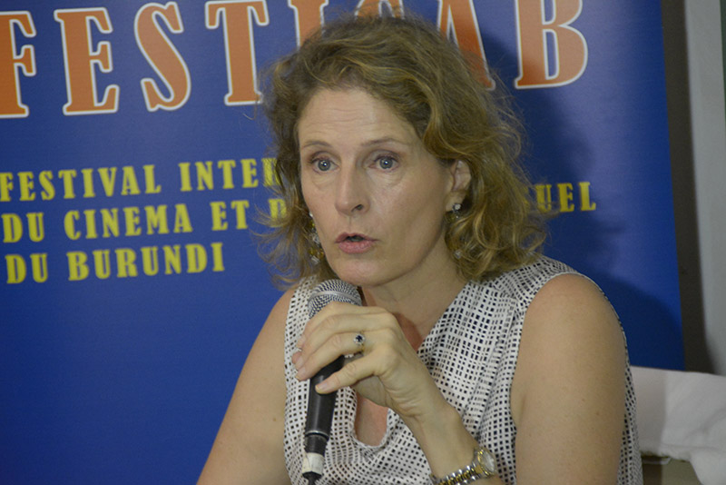
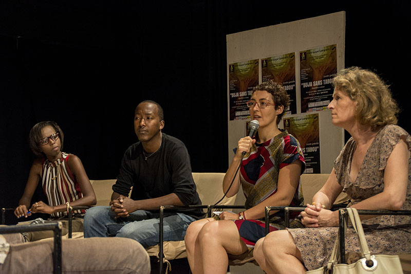

La Troupe Lampyre a lancé ce 1 mars 2016 la deuxième édition du Festival de théâtre "Buja sans tabou". A l’affiche, des ateliers de formation autour des métiers du théâtre et de représentations sur la scène de Bujumbura et Gitega.
La Troupe Lampyre a lancé ce 1 mars 2016 la deuxième édition du Festival de théâtre "Buja sans tabou". A l’affiche, des ateliers de formation autour des métiers du théâtre et de représentations sur la scène de Bujumbura et Gitega.
Du 1 au 14 mars 2016 à Bujumbura et à Gitega abritent le Festival de théâtre « Buja sans tabou ». L’ouverture officielle a été déclarée par Freddy Sabimbona, Directeur artistique de la Troupe Lampyre (initiatrice dudit festival).
« Cette 2ème édition de Buja sans tabou vient pour créer un pont entre la théâtre de l’Afrique de l’Est et celui de l’Afrique de l‘Ouest », dit Freddy. En effet, le Burkina Faso et la Cameroun prendront part à ce festival. Six représentations théâtrales sont attendues sur les planches de l’Institut Français du Burundi (IFB) et du Centre Jeunes Kamenge.
Freddy Sabimbona, Directeur artistique de la Troupe Lampyre
Au cours de ce lancement du festival, Geneviève Jean-Van Rossum, Directrice de l’IFB, a salué la réussite de l’édition précédente et la continuité dont assure la Troupe Lampyre en ouvrant cette 2ème édition. Elle a également exprimé le réengagement de l’IFB à soutenir cette initiative.
A l’endroit du grand public, Stéphanie Soleansky, Directrice délégué de l’IFB, a lancé un appel au grand public d’inonder les salles où se tiendront les six représentations théâtreles programmées à partir du 10 mars. « L’entrée sera gratuite », a-t-elle souligné.
Vous noterez que la première édition de « Buja sans tabou » avait réuni 3500 personnes durant quatres jours, selon Freddy Sabimbona. Celui-ci dit être confiant que l’audience sera encore au rendez-vous.
Geneviève Jean-Van Rossum, Directrice de l’IFB
